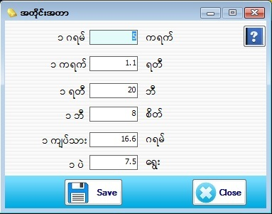

Measurement Setup

- Master Setup အောက်ရှိ Measurement ကို နှိပ်ပါ။
- Software တစ်ခုလုံးတွင် အသုံးပြုသွားမည့် အလေးချိန်အတိုင်းအတာများ၏ တစ်ခုနှင့်တစ်ခုတို့၏ ဆက်သွယ်ချက်ဖြစ်ပါသည်။
- အတိုင်းအတာတစ်ခုခုကိုပြောင်းလဲချင်လျှင် သူနှင့်ဆိုင်သော text box ၏အတိုင်းအတာပြောင်းလဲပြီး Save button ကိုနှိပ်ပြီး သိမ်းဆည်းနိုင်ပါသည်။
- ထို Form တွင် အတိုင်းအတာတစ်ခုခုကို ပြောင်းလဲသတ်မှတ်ပြီးတိုင်း Master Setup အောက်ရှိ LogOff ကိုနှိပ်ပေးရပါမည်။